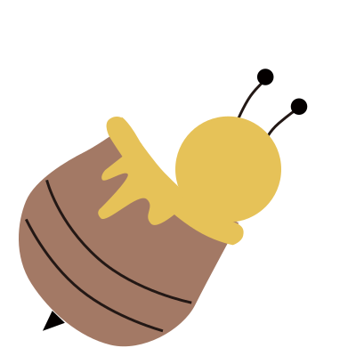
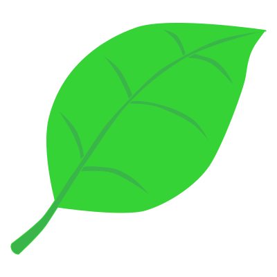
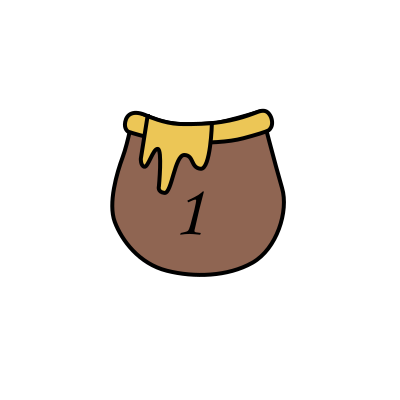
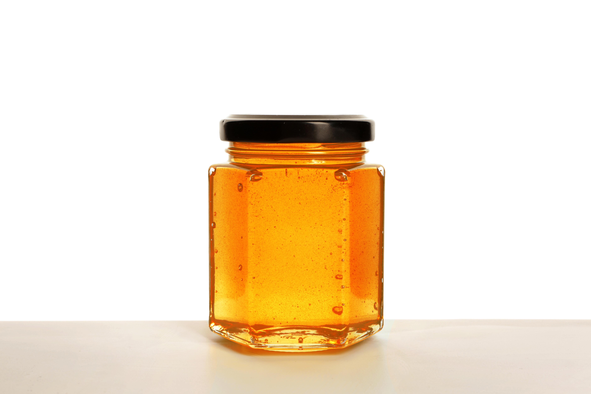
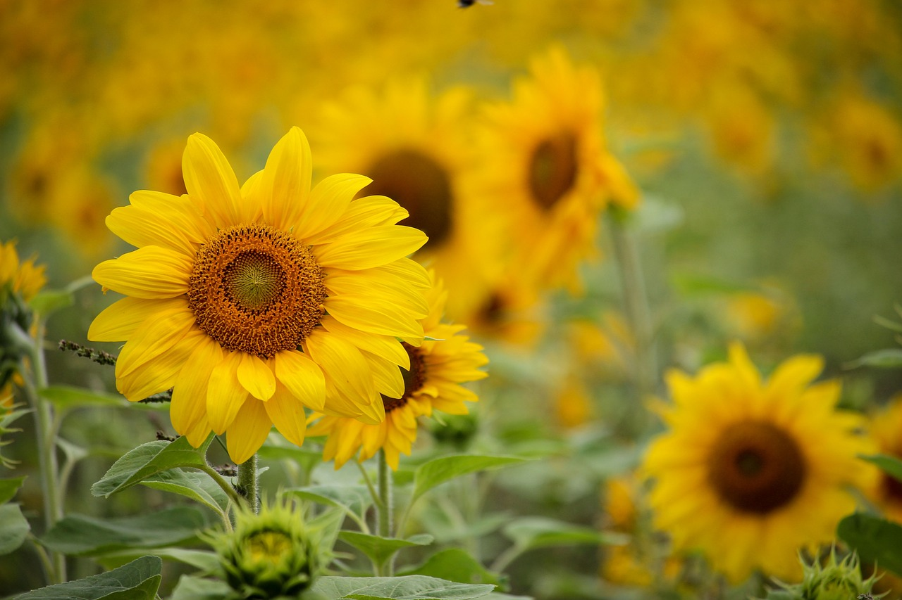
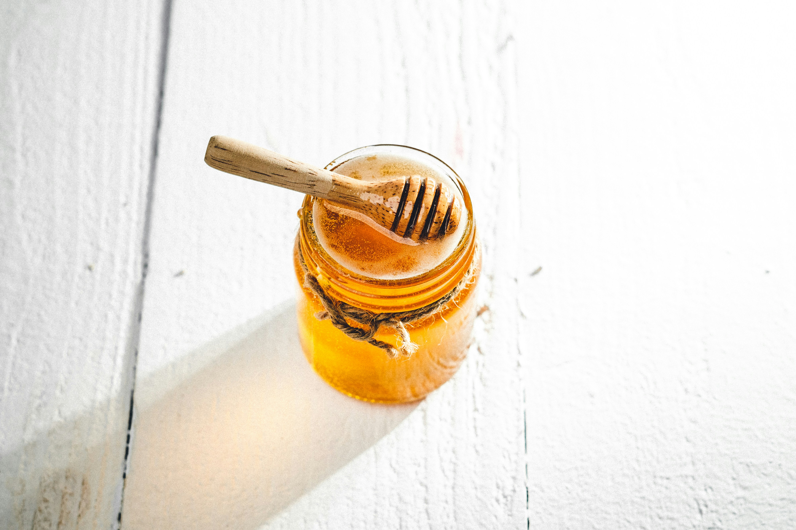
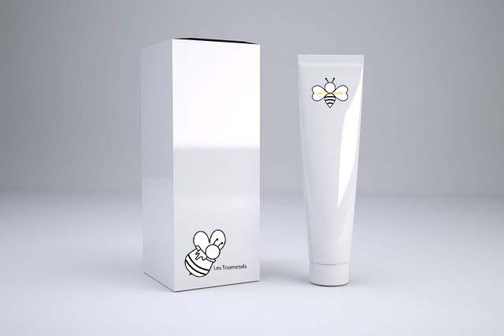
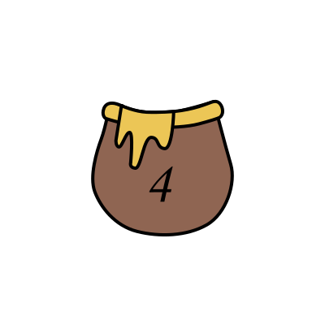
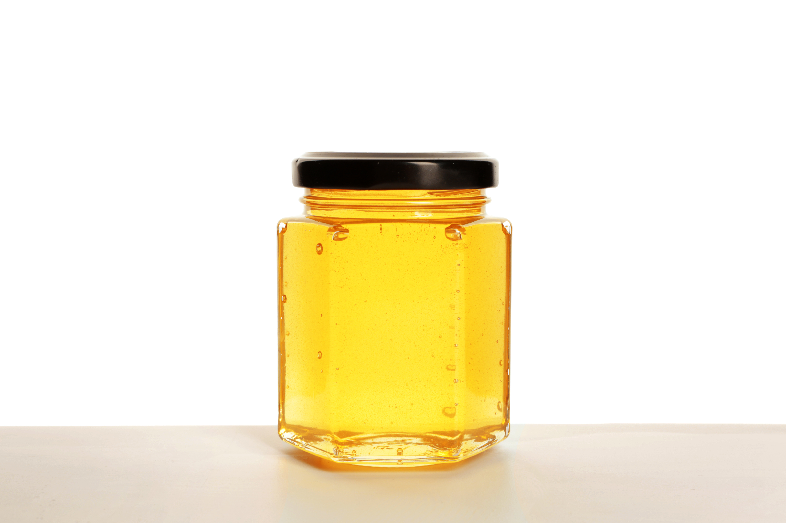
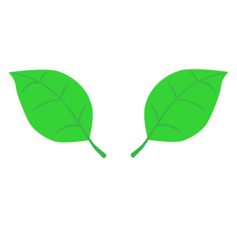

フランスの自然から生まれたこだわり
「自然の恵みで、心もからだもふんわり美しく。」
フランスののどかな草原や花畑で、ミツバチたちが一生懸命に集めたはちみつ。そんな自然の贈りものを、私たちは丁寧に選び、やさしく瓶に詰めています。太陽の光をたっぷり浴びた花の香り、ひと口で広がるまろやかな甘さ。それはまるで、フランスの風景をそのまま閉じ込めたよう。忙しい毎日の中でも、自然のやさしさにふっと癒されて、心もからだも、ちょっと笑顔になれる。そんなひとときをお届けしたいと思っています。


- ランキング -

人気No.1
Les Tournesols
‐ レ トゥルヌソル ‐
ひまわりのはちみつ
500g/￥3.300


ひまわりのはちみつって？
太陽の光をたっぷり浴びて咲く、ひまわりの花の蜜をミツバチたちがせっせと集めて作った**単花蜜（たんかみつ）**ひと口食べると、ふんわりと花の香りが広がり、あと味はすっきり。パンやヨーグルト、紅茶に合わせると、やさしい甘さが引き立ちます。その明るく華やかな風味から、「太陽のはちみつ」とも呼ばれています。
No.2

Miel お試しセット
￥1.650
こだわりの３種のはちみつと、木製ハニーディップがセットになったお試しセットです。まずは味の違いを楽しんで、そこからお気に入りを見つけてみてください。
No.3

ヘアマスク
270g/￥5.500
週に一度のご褒美にぴったりな、濃密はちみつヘアマスク。こっくりとしたテクスチャが髪をやさしく包み込み、ダメージを受けた髪を芯から補修します。

No.4

Miel de Lavande
‐ ミエル・ド・ラヴァンド ‐
ラベンダーのはちみつ
500g/￥3.850
ラベンダーはちみつはフランスを代表するはちみつのひとつです。華やかで上品な香りが特徴で、口に含むとふわりと広がる芳香が心を癒してくれます。チーズやハーブティーとの相性も抜群です。
- はちみつの効能 -
1．免疫力向上・風邪予防
ビタミン類やフラボノイドが含まれ、免疫細胞の活性化や体内の病原体との戦いを助けます。
2．疲労回復・睡眠の質向上
ビタミンB群やアミノ酸が豊富に含まれており、エネルギー補給や疲労回復に役立ちます。
3．咳・喉の痛みの緩和
粘度が高く、喉を潤す効果や、抗菌作用が喉の不調を和らげます。
4．腸内環境の改善
オリゴ糖やグルコン酸が善玉菌のエサとなり、腸内環境を整えて便秘の解消を助けます。
5．ダイエットサポート
含まれるアミノ酸が脂肪燃焼を促し、代謝を高める可能性があります。
6．美肌・アンチエイジング
ビタミンなどの抗酸化成分が、活性酸素を除去して肌細胞を守り、健康的な肌を維持します。
※1歳未満の乳児には与えない：:ボツリヌス菌のリスクがあるため、生後1歳未満の乳児にははちみつを与えないでください。
